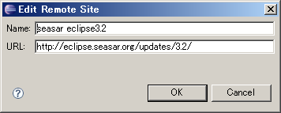

|
 |
|||||
■環境設定Teedaを始めるために、まずはプロジェクトを作成しましょう．
Eclipseのアップデートサイトで下記のように指定して、OKを押します．  次にいくつかプラグインが一覧に現れるので、Doltengにチェックを入れてOKを押します．  そのままDoltengをインストールして、workspaceを再起動すれば環境設定は完了です． では、続けてプロジェクトを新規作成してみましょう． ■プロジェクトの作成ではプロジェクトを新規作成してみましょう． TODO ■はじめの一歩TODO |
||
| Copyright© 2006-2007, The Seasar Foundation and the others. All rights reserved. |